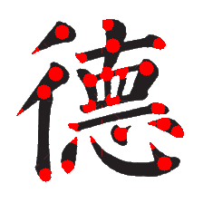
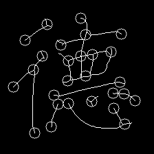
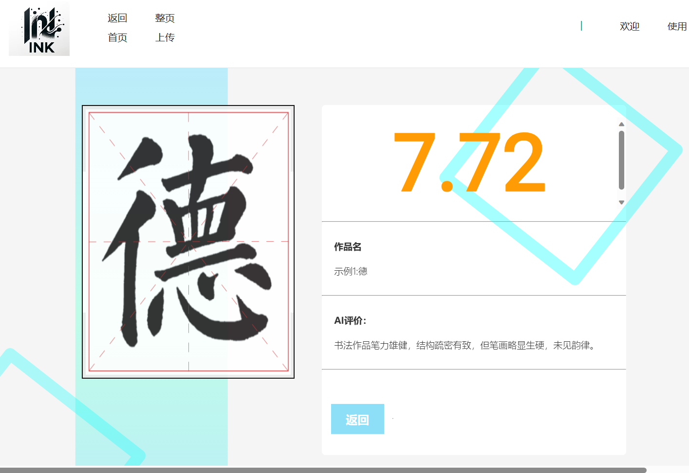

这
是一个全新的尝试
是一个公正，客观的评价平台
Inkin，是中南大学CSU-YFK小组在图像工程专业课中完成的书法智能评分项目。在这里，你可以享受到基于GNN图神经网络开发的免费在线书法评分服务
Inkin的尝试，是探讨如何促进书法教育的创新，引入在线教育平台和技术手段，以弥补传统书法教学模式的不足，提高教学效果；弥补传统书法评价体系的不足，提高评价的科学性、客观性，促进学生书法技能的全面提升。
我们希望，通过智能书法教学评价系统，进一步优化书法教育资源的分配，使其更公平地覆盖不同地区和学校，以便缩小书法资源差距。
骨架提取，关键点提取
交叉区域结合聚类对畸变区域分析，利用笔画走势信息对骨架进行修复完成骨架重建。
AI智能书法评价
当用户选择汉字作品上传后，可以方便地得到AI的给分评价，除此之外，AI还将根据笔锋，结构等书法美学因素，给出作品的优点和不足，以供用户清楚地看到作品的优势和改进方向


